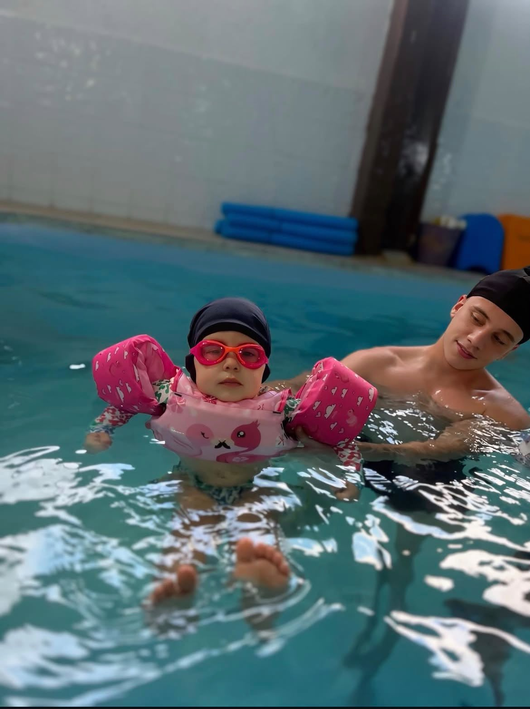
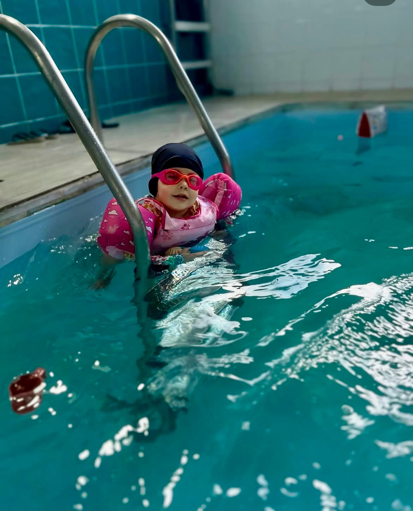

Bebês de 6 meses a 2 anos e crianças de 3 a 5 anos, cada um no seu tempo, da primeira adaptação ao nado.
Bebês · A proposta
Com os bebês de 6 meses a 2 anos, a aula é lúdica e feita de brinquedos na água. É uma aula cantada, pensada para o bebê interagir e se engajar com o professor e com a água, e assim começar a se desenvolver.
As músicas aproximam o bebê do professor e deixam o momento leve e divertido.
O brincar conduz a aula e faz o bebê se interessar pela água.
Quanto mais ele interage, mais ele se desenvolve dentro da água.
Bebês · A progressão
Partimos de uma atividade lúdica e trabalhamos a propulsão de perna de frente e de costas.
Quando o bebê demonstra conforto e engajamento, o professor propõe o primeiro mergulho de forma leve. Se houver desconforto, a gente para.
A frequência aumenta aos poucos e apenas enquanto ele responde bem. O ritmo é dele, não do calendário.
Bebês · Os materiais
Na aula de bebê usamos a boia como recurso de apoio e conforto. Ela não é equipamento de segurança e não substitui o apoio direto do professor, que fica por perto o tempo todo.
Quando necessário, amarramos um macarrão junto com a boia para dar ao bebê ainda mais equilíbrio.
Bebês · Quando tiramos a boia
A retirada não depende de um único sinal nem de um prazo. O professor avalia o conjunto da resposta dele ao planejamento que montamos. Quando ele reúne esses pontos positivos, começamos a tirar a boia aos poucos:
Já mergulha a cabeça dentro da água por conta própria.
Já se desloca pela piscina com a cabeça na água, com pouca ajuda ou nenhuma.
Começa a compreender o que o Tio Nicolas fala com ele.
Participa com conforto, sem sinais de desconforto, e o professor avalia que ele está pronto.
O tempo varia de bebê pra bebê: cada um tem o seu ritmo.
Bebês · A adaptação
Nas primeiras aulas, é comum o bebê estranhar o professor, e o choro faz parte da adaptação. Mesmo assim, o choro é um sinal que o professor observa e interpreta: a intensidade e o jeito dele guiam o que fazemos em seguida.
Dependendo do caso e da intensidade do desconforto, pedimos que a mãe ou outro responsável entre na piscina junto com o bebê, para ajudar na adaptação. Cada bebê responde de um jeito, e a decisão é sempre individual.
Cada bebê tem o seu tempo, e a gente respeita cada passo da jornada dele na água.

3 a 5 anos · A aula
Dos 3 aos 5 anos a aula ganha mais repertório, e entramos de fato nos quatro nados. A aula é montada com base neles para que a criança se desenvolva melhor.
3 a 5 anos · Os quatro nados
Jacarezinho, bolhas pelo nariz e a condução do braço com o professor.
Deitada de costas, com a prancha, batendo a perninha.
Perninha de sapo, com o auxílio do professor, no fim da aula.
Ondulação, que as crianças conhecem como golfinho ou sereia.
Cada criança está num momento diferente, e o processo respeita o desenvolvimento dela.
3 a 5 anos · As fases
Estimativa: cerca de 3 meses por fase, variando de criança para criança.
A criança ainda utiliza a boia.
Entende o que o professor comunica e faz com mais facilidade. Bate a perna em apneia (prendendo a respiração), tira a cabeça, pega o ar e volta para a água.
Saímos da boia e passamos a um colete com cinta na região da barriga, que dá uma leve ajuda de sustentação.
Domina a técnica de sustentar, pegar o ar e voltar.
A criança nada sem nenhum material de facilitação.
3 a 5 anos · O exercício principal
É o principal exercício dessa faixa etária. Quando a criança domina a sustentação, a respiração e o retorno, ela ganha autonomia na água, e isso facilita o desenvolvimento dos demais nados.
Cabeça dentro da água, batendo a perninha, em apneia (prendendo a respiração).
Quando precisa respirar, a criança tira a cabeça e olha para cima.
Ela fala a palavra A para pegar o ar.
Volta com a cabecinha para dentro da água e continua.
3 a 5 anos · O colete e a supervisão
O colete é uma ajuda de sustentação. Com esse apoio, a criança aprende a técnica de tirar a cabeça, pegar o ar e voltar.
Cada etapa depende do desenvolvimento de cada criança. O processo é muito individual: a criança avança quando mostra os sinais, e não quando o calendário manda.
Vídeos
Bebês · Base científica
O método dialoga com a literatura, mas as evidências são limitadas e apoiam pontos específicos, não o método inteiro.
Uma revisão de 18 estudos (0 a 36 meses) encontrou sinais de ganhos motores em bebês de programas aquáticos e considera a prática, em geral, segura. A qualidade das evidências é limitada.
Em um ensaio clínico randomizado, cantar mais para o bebê veio acompanhado de melhora de humor, relatada pelos cuidadores. O estudo foi feito fora da água.
A orientação técnica pede submersão progressiva e divertida, nunca forçada, interrompida ao primeiro sinal de desconforto, com limites por aula.
O estranhamento de pessoas novas costuma começar por volta dos 8 a 9 meses e diminuir até os 2 anos. Acolhimento e adaptação gradual são o manejo indicado.
3 a 5 anos · Base científica
Há menos pesquisa específica para essa faixa etária. Cada fonte apoia um ponto, não o método inteiro.
Entre crianças de 1 a 4 anos, só 3% das que se afogaram tinham feito aulas de natação, contra 26% das que não se afogaram. Os autores veem sinal de proteção, mas não mediram o tamanho do efeito.
Inclui voltar à superfície, orientar-se para a segurança, boiar e nadar com controle da respiração. Dialoga com o exercício de respirar e voltar, mas quem tem só o básico ainda é iniciante.
Em 21 pré-escolares (média de 4,7 anos), seis meses de aulas melhoraram habilidades aquáticas básicas, como o controle da respiração com o rosto na água. Amostra pequena.
Numa pesquisa australiana, crianças de 3 a 5 anos que nadam pareciam mais avançadas em motricidade e linguagem. Os autores não afirmam que a natação seja a causa.
Limites e referências
Contato
Quer conhecer as aulas do Tio Nicolas? Me chama no Instagram.
@nmaielo_Cada criança tem o seu tempo, e a gente respeita cada passo.